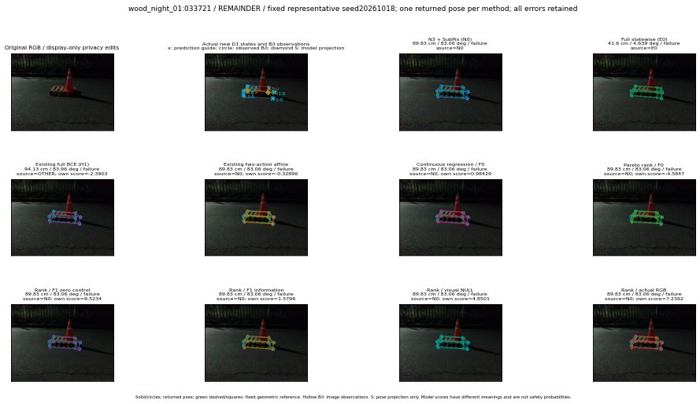

실선은 반환 자세, 초록 점선은 고정 기하 참조입니다. S는 영상 관측이 아닙니다. 점수는 모델별 의미가 다르며 보정된 안전 확률이 아닙니다. 개인정보 처리는 표시 사본에만 적용했습니다.
| 방법·seed | 위치 / 회전 / 공동성공 | 실제 출처 | 선택 후보 | 각 모델 자체 점수 |
|---|---|---|---|---|
| N0 | 89.83 cm / 83.06 deg / failure | N0 | N/A | N/A |
| E0 | 41.6 cm / 4.639 deg / failure | E0 | N/A | N/A |
| E0_REGENERATED | 41.6 cm / 4.639 deg / failure | E0 | E0_REGENERATED | N/A |
| POSEFIX_SUBPIX_PF_ANCHOR | 88.49 cm / 83.39 deg / failure | OTHER | N/A | N/A |
| POSEFIX_SUBPIX_YOLO_ANCHOR | 88.49 cm / 83.39 deg / failure | OTHER | N/A | N/A |
| D1_H1_MLP_s20261018 | 94.13 cm / 83.96 deg / failure | OTHER | WD0/ORIGINAL_WD/selected | -2.390289306640625 |
| D1_H1_MLP_s20261019 | 94.13 cm / 83.96 deg / failure | OTHER | WD0/ORIGINAL_WD/selected | -2.053659677505493 |
| D1_H1_MLP_s20261020 | 94.13 cm / 83.96 deg / failure | OTHER | WD0/ORIGINAL_WD/selected | -2.827162981033325 |
| D1_H1_PAIR_MLP_s20261018 | 89.83 cm / 83.06 deg / failure | N0 | N0 | -1.2580888271331787 |
| D1_H1_PAIR_MLP_s20261019 | 89.83 cm / 83.06 deg / failure | N0 | N0 | -1.631131649017334 |
| D1_H1_PAIR_MLP_s20261020 | 89.83 cm / 83.06 deg / failure | N0 | N0 | -2.623292922973633 |
| D1_H1_PAIR_ROLE_AFFINE_s20261018 | 89.83 cm / 83.06 deg / failure | N0 | N0 | -0.32896119356155396 |
| D1_H1_PAIR_ROLE_AFFINE_s20261019 | 89.83 cm / 83.06 deg / failure | N0 | N0 | -1.1583247184753418 |
| D1_H1_PAIR_ROLE_AFFINE_s20261020 | 89.83 cm / 83.06 deg / failure | N0 | N0 | -0.29834628105163574 |
| R_CONT_F0_s20261018 | 89.83 cm / 83.06 deg / failure | N0 | N0 | 0.9842872619628906 |
| R_CONT_F0_s20261019 | 94.13 cm / 83.96 deg / failure | OTHER | WD0/ORIGINAL_WD/selected | 1.0457572937011719 |
| R_CONT_F0_s20261020 | 94.13 cm / 83.96 deg / failure | OTHER | WD0/ORIGINAL_WD/selected | 1.0405311584472656 |
| R_ORDER_F0_s20261018 | 89.83 cm / 83.06 deg / failure | N0 | N0 | -4.58473014831543 |
| R_ORDER_F0_s20261019 | 89.83 cm / 83.06 deg / failure | N0 | N0 | -1.9663128852844238 |
| R_ORDER_F0_s20261020 | 89.83 cm / 83.06 deg / failure | N0 | N0 | -3.4020004272460938 |
| R_ORDER_F1_ZERO_s20261018 | 89.83 cm / 83.06 deg / failure | N0 | N0 | 9.523444175720215 |
| R_ORDER_F1_ZERO_s20261019 | 89.83 cm / 83.06 deg / failure | N0 | N0 | 8.479782104492188 |
| R_ORDER_F1_ZERO_s20261020 | 89.83 cm / 83.06 deg / failure | N0 | N0 | 2.0487518310546875 |
| R_ORDER_F1_s20261018 | 89.83 cm / 83.06 deg / failure | N0 | N0 | 1.579608678817749 |
| R_ORDER_F1_s20261019 | 89.83 cm / 83.06 deg / failure | N0 | N0 | 4.017441749572754 |
| R_ORDER_F1_s20261020 | 89.83 cm / 83.06 deg / failure | N0 | N0 | 7.664552211761475 |
| V_ORDER_NULL_s20261018 | 89.83 cm / 83.06 deg / failure | N0 | N0 | 4.850061416625977 |
| V_ORDER_NULL_s20261019 | 89.83 cm / 83.06 deg / failure | N0 | N0 | 1.10988450050354 |
| V_ORDER_NULL_s20261020 | 89.83 cm / 83.06 deg / failure | N0 | N0 | 4.591305732727051 |
| V_ORDER_RGB_s20261018 | 89.83 cm / 83.06 deg / failure | N0 | N0 | 7.23622989654541 |
| V_ORDER_RGB_s20261019 | 89.83 cm / 83.06 deg / failure | N0 | N0 | 0.5793960094451904 |
| V_ORDER_RGB_s20261020 | 89.83 cm / 83.06 deg / failure | N0 | N0 | -0.26178452372550964 |